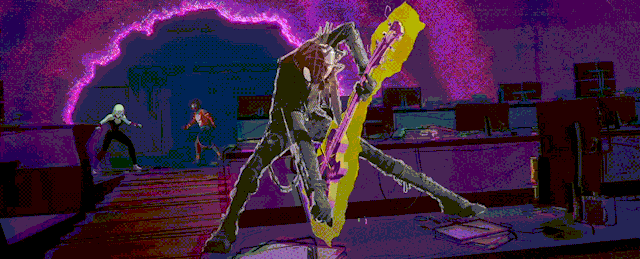

Spider-Man: Across the Spider-Verse

I worked for over 2 and a half years on Spider-verse, from right before animation started, until shipping weeks before release. While most of that time was in Maya developing animation tools, I also got the chance to work in Houdini as part of the FX department. This involved shots with a mix of procedural and hand-drawn effects which you can check here.
Tools
Inklines
My longest assignment was to redesign and maintain one of the main animation tools of the project. This was done through extense collaboration with the Anim Leads, and although we signed on a new workflow early on, there was a lot of new features and polishing required as the team grew to 300+ users.
Given the multiple types of lines and ways of drawing, the tool had to serve as a rig picker, a scene manager and a toolbar all in one. So it was important to create a flexible experience that would allow the artists to draw freely and only have more advanced options show when they need them.
The lines weren’t just for flashy smears, they could also be drawn or constrained directly on the surface for performance, and then be exported across different shots for continuity.
The first movie lines were just a static nurbs bind to some clusters. We changed that to a new dynamic spline based approach that allowed us to add or remove controllers. Although I was able to repurpose the custom node from the The Sea Beast ropes, there’s a great post from Cole O’Brien breaking down how to do this with vanilla maya nodes. On top of this, I had to figure out some logic to dynamically recreate these while preserving the curvature and tangents with the minimum ammount of controls for any custom “baked” curve, whether that was drawn, from a model or imported from Blender.
We also pushed a lot for a better viewport drawing experience. As I was already familiar with making custom Context Commands, I wrote some projection options to get the points from screen space into different planes and normals based on the type of selection. There was as constant back and forth between artists who preffered the spline rig approach, the viewport drawing or just foregoing everything to frame by frame in Blender. We had to accomodate every option and constantly make sure those all related back to the same pipeline for the back-end.
That standard in rendering was crucial since FX also had their own Linework team, and the question of who does what is in fact something we often get asked. But as the FX department got flooded by the final deadline, that pipeline allowed animators to take some of the load out of the smaller Houdini team.
Clonestamps - Smear Tool
My first task on the show was to rethink our body smears (also known as “multiples”) workflow. Some of the main goals were:
- Optimizing the idle time that took to load our assets.
- Re-writing the api to be more modular and scalable.
- Redesigning the UI and selection methods to keep artists in their flow, without disruption.
I pitched a new selection system that accommodated a variety of ways to automatically split the mesh. This system proved to be very flexible for artists, allowing them to use it in different ways without overcrowding the UI with options. Later, the tool had to account for things like variants, groom, and cfx meshes. The new API allowed us to implement various updates requested by downstream departments, which were seamless to the artists.
FX Work
I worked for over 2 and a half years on Spider-verse, from right before animation started, until shipping weeks before release. While most of that time was in Maya developing animation tools, I also got the chance to work in Houdini as part of the FX department. This involved shots with a mix of procedural and hand-drawn effects which you can check here.
RnD and Explorations
Due to the ever changing scope of the project, there was a lot of tech-art work that didn’t make the cut. We were lucky to have a Pipeline Supervisor that would constantly ask us to chime in and pitch solutions, these were some of my favorites I got to mockup.
Procedural Punk Cutout
After the first animation tests, it was clear how much the cutout would play into Hobie’s character. The idea was a decimated, inverse-hull cage wrapped to the rig and displaced by a noise plugged to his stepping. The script could also generate these cages for any other characters or props on the fly when needed for other characters or prop interaction. The end solution was way more elegant.
Stylized viewport shader
Due to the variety of rendering styles on the movie and the complexity of our final look-of-picture pipeline, we also experimented with different ways of representing those looks inside the Maya viewport. It was important to visualize how lighting and shading could drive the performances. That meant that characters from different universes like Ben Reilly had their own independent light logic. To achieve this, I helped the team by mocking up a custom viewport shader that could also be used for characters like Peni or Hobie.
After the proof of concept, this - along with other Ben Reilly specific setups - was made into its own tool by Alan Zheng.
Functional Portals
We tried a miriad of approaches during production from custom deformers to Houdini Engine and OpenGL Shaders. Early on I tried Bifrost on a two sided portal setup that would flatten the geometry and copy the mesh to the other side with a “travel time” offset exposed. This wasn’t developed further as the logic of portals changed a lot and anim would often need to mockup a lot of things in the hackiest, fastest way possible. That in itself is a great summary of the inherit challenge of developing tech and standardadizing workflows for a project like this, sometimes we really do need to step back and just let artists do their own thing.